工房データ（素材・装備・料理）
モンスターが落とす素材を使って、周回をまたいで残る装備と時限バフの料理を作れるのが工房です。クッキーとは独立した資源なので、生産量が止まっている周回でも工房は着実に進みます。
工房の解放
工房は最初から使えるわけではありません。転生スキル「素材の嗅覚」（7ポイント）を取るとモンスターが素材を落とすようになり、工房タブが開きます。続けて「工房の拡張」（10ポイント）で装備の作成欄（ティア1）が解放されます。ティア2以降は「上位工房I〜V」でそれぞれ1ポイントずつです。
素材一覧
素材はクッキー経済とは交差しません。クッキーで買うことも、クッキーに変換することもできない、純粋なメタ進行の資源です。
| 素材 | 区分 |
|---|---|
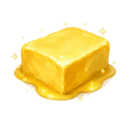 濃厚バター |
基本素材 |
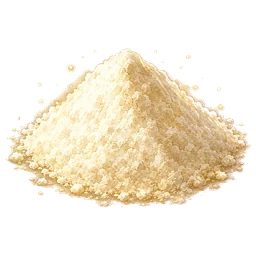 石臼小麦粉 |
基本素材 |
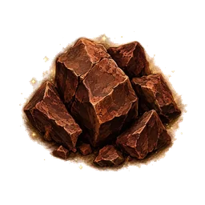 カカオ塊 |
基本素材 |
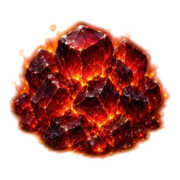 溶岩糖 |
基本素材 |
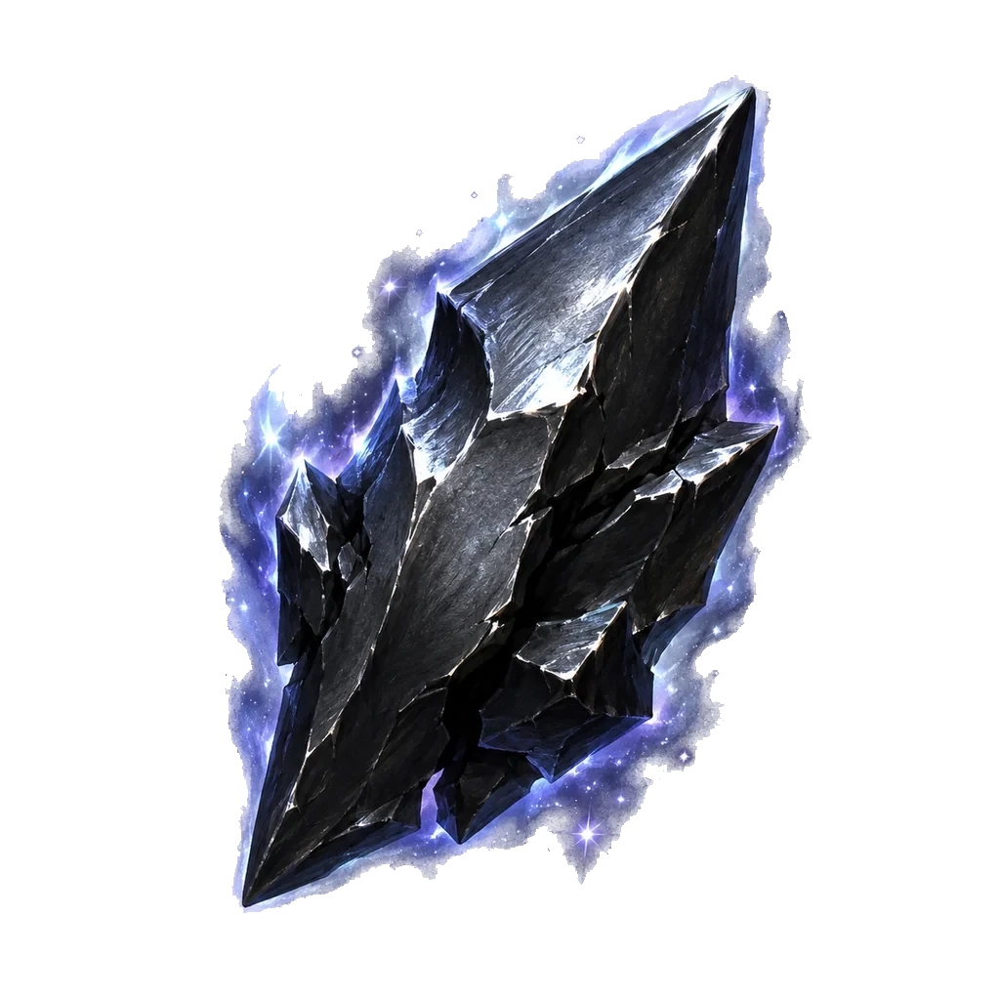 黒鉄の欠片 |
レア素材 |
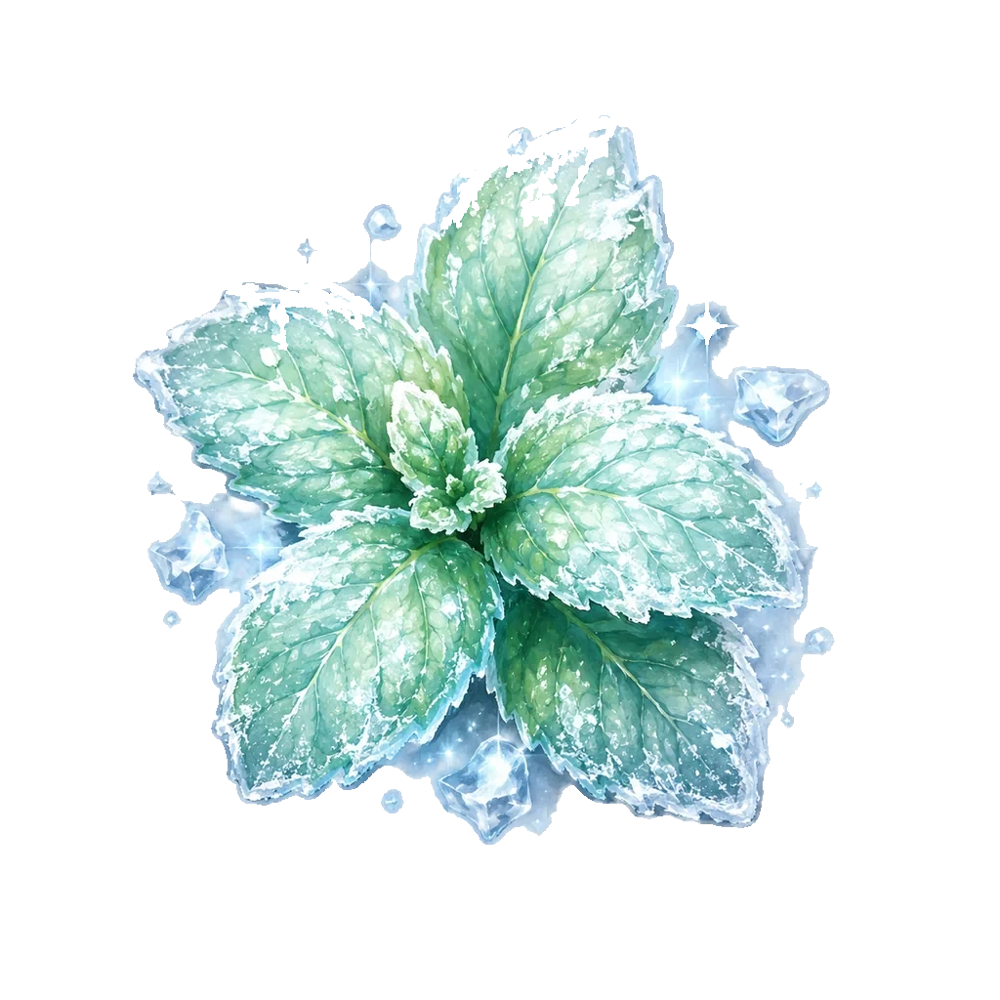 氷結ミント |
基本素材 |
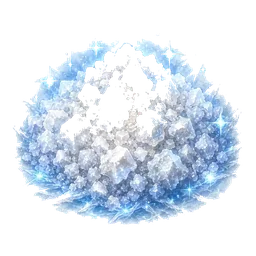 霜砂糖 |
基本素材 |
| 静寂の氷核 | レア素材 |
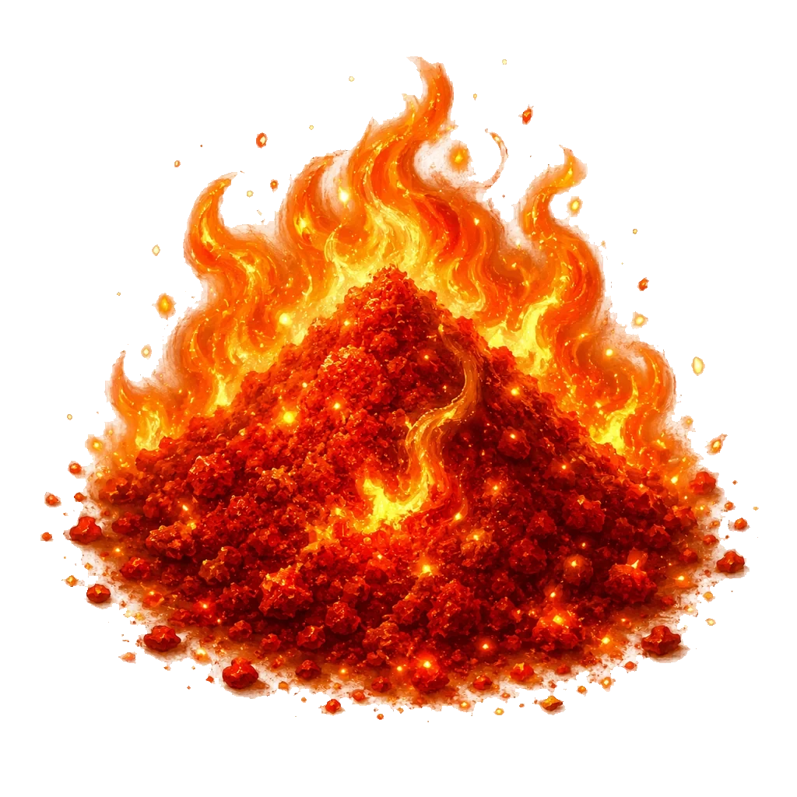 火炎香料 |
基本素材 |
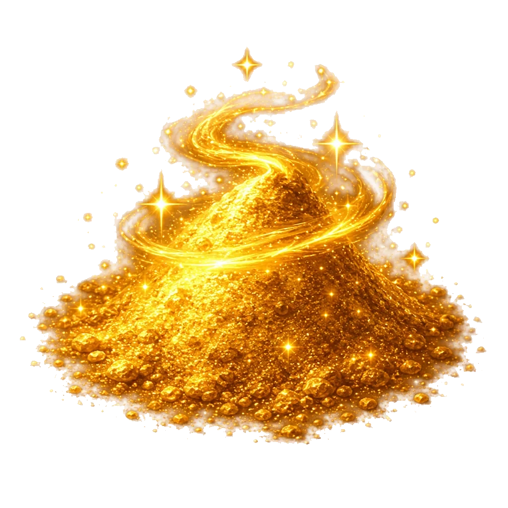 黄金粉 |
レア素材 |
| 星屑糖 | 基本素材 |
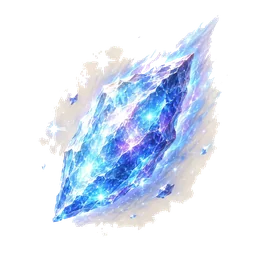 彗星の欠片 |
レア素材 |
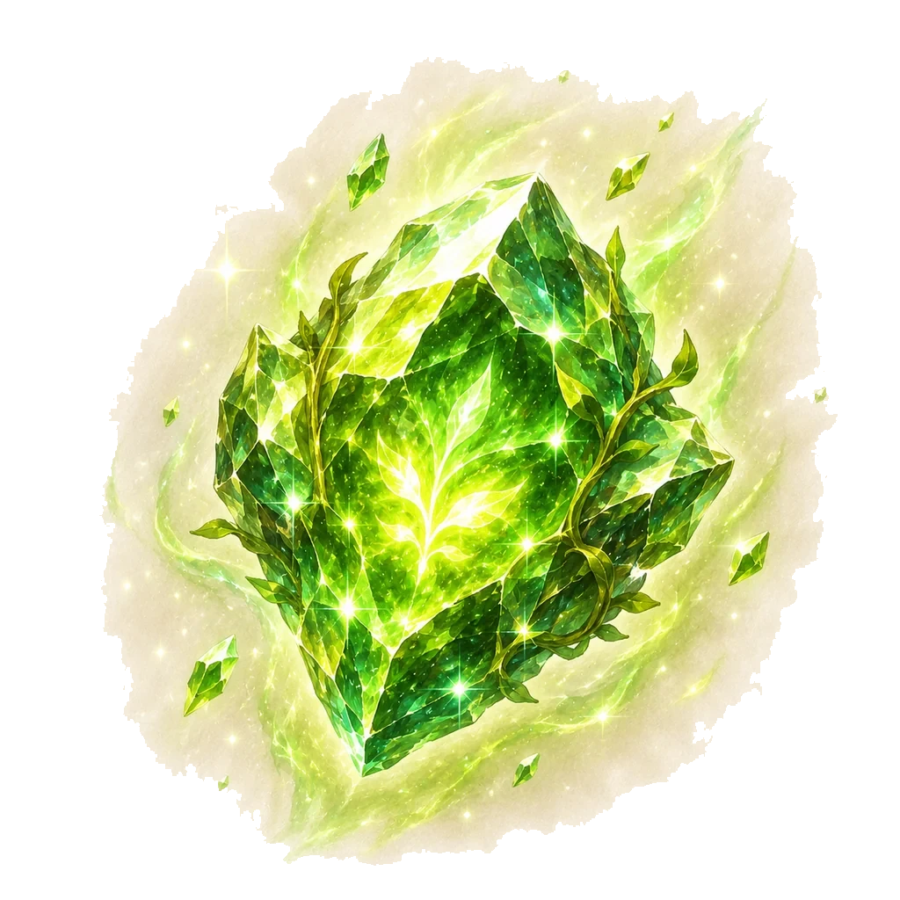 ボス核・草原 |
ボス素材 |
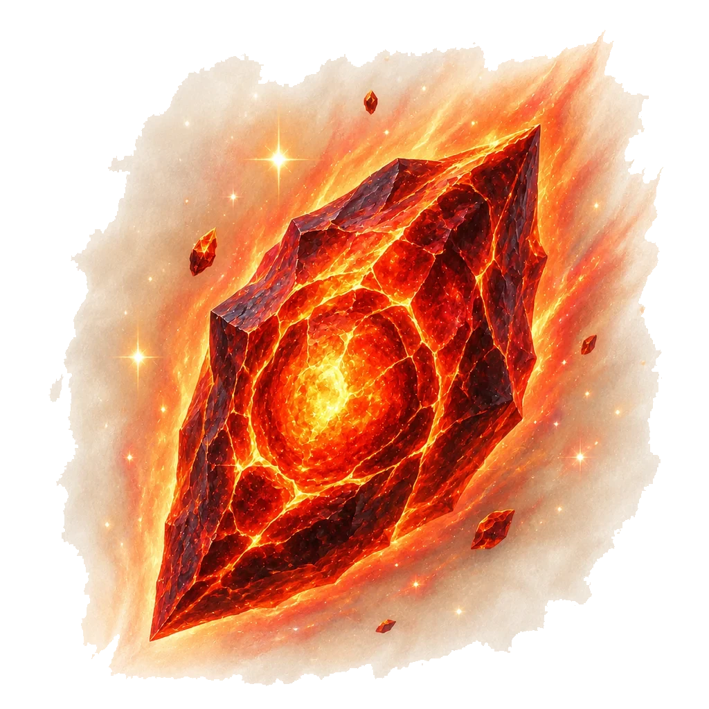 ボス核・火山 |
ボス素材 |
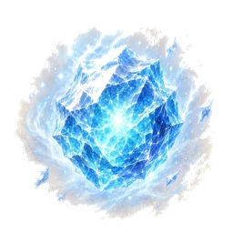 ボス核・氷河 |
ボス素材 |
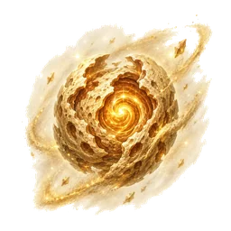 ボス核・砂丘 |
ボス素材 |
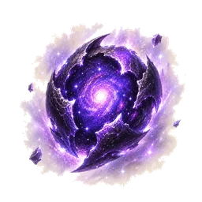 ボス核・銀河 |
ボス素材 |
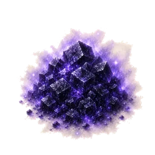 虚空糖 |
レア素材 |
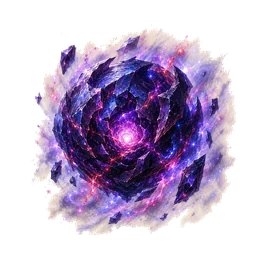 深層核 |
ボス素材 |
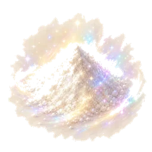 万能粉 |
基本素材 |
基本素材はそのステージのモンスターを通常撃破すると落ちます。レア素材はオーバーキル・ノルマ余裕率2倍・金ブースト中といった条件つきの撃破で落ちます。詳しくはモンスター図鑑の「倒し方でドロップが変わる」を参照してください。
万能粉は周回方針「標準（バランス型）」でのみ落ちる特殊な素材で、ボス核以外の任意の素材の代わりに使えます。ただし必要数は2倍換算です。特定の素材が足りずに装備が作れないときの保険になります。
色素材とティア
装備の作成には、上の素材とは別に「色素材」を使います。色素材はモンスターの色（＝ノルマの層帯）で決まり、6段階あります。
| ティア | 色素材 | 対応する装備グレード |
|---|---|---|
| T1 | しろがね粉 | 粗鉄の装備 |
| T2 | こはく粉 | 鍛鉄の装備 |
| T3 | ひすい粉 | 白銀の装備 |
| T4 | るり粉 | 黄金の装備 |
| T5 | むらさき粉 | 星鋼の装備 |
| T6 | べにばな粉 | 神話の装備 |
上位の色素材は下位の代わりに使えます。そのため、深いノルマ層まで維持できるようになるほど、下位ティアの装備作成は楽になります。装備は9カテゴリ（武器・盾・防具上・防具下・手・帽子・靴・アクセサリー甲／乙）あり、ティアが1つ上がるごとに全体倍率が2倍になります。
装備一覧（道具）
こちらは工房の「道具」枠です。レベル制で、コストは基本コスト × 2.2Lv（切り上げ）、レベル上限は10。効果は転生しても失われません。
| 道具 | 基本コスト（Lv1） | Lv1の効果 | Lv10の効果 |
|---|---|---|---|
| 黄金の泡立て器 | 濃厚バター ×10、石臼小麦粉 ×8 | タップに乗る毎秒生産の割合 ×1.15 | タップに乗る毎秒生産の割合 ×2.50 |
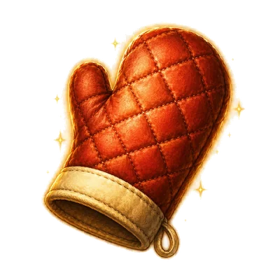 断熱オーブン手袋 |
カカオ塊 ×12、黒鉄の欠片 ×2 | オーブン生産 ×1.12、モンスターダメージ +5% | オーブン生産 ×2.20、モンスターダメージ +50% |
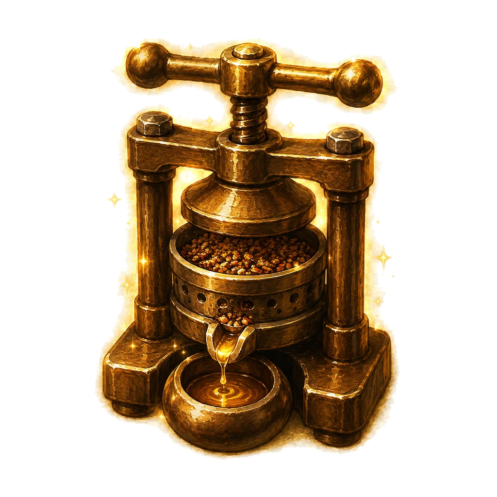 香料圧搾機 |
火炎香料 ×14、黄金粉 ×2 | 金ブースト倍率 ×1.04 | 金ブースト倍率 ×1.40 |
| モンスター図鑑 | 黒鉄の欠片 ×4、静寂の氷核 ×2 | 素材ドロップ +0.5個、モンスターダメージ ×1.15、行商の買い取り ×1.05 | 素材ドロップ +5.0個、モンスターダメージ ×2.50、行商の買い取り ×1.50 |
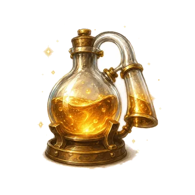 蒸留フラスコ |
氷結ミント ×10、溶岩糖 ×6 | 料理の効果時間 ×1.10 | 料理の効果時間 ×2.00 |
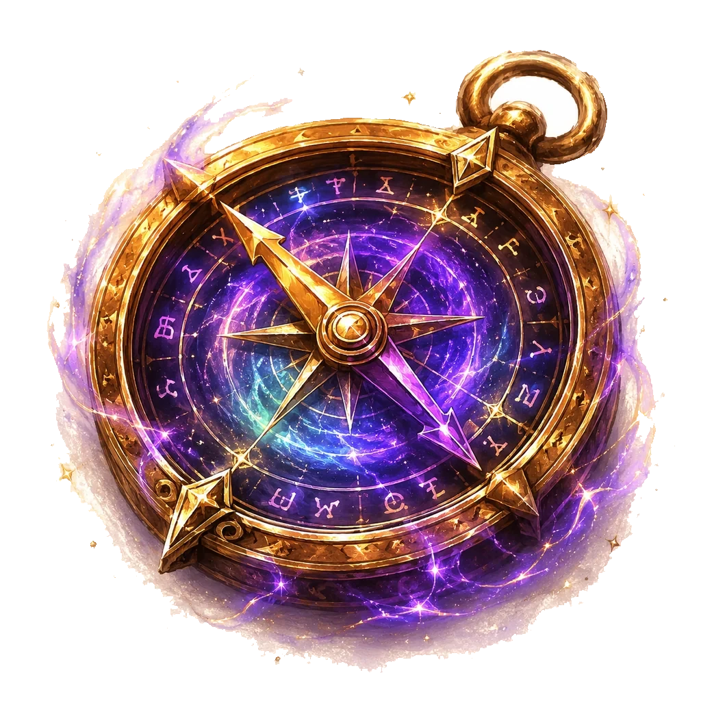 次元コンパス |
ボス核（いずれか） ×1、星屑糖 ×12 | ボス化に必要な討伐数 -1、選択中ステージの素材ドロップ ×1.05 | ボス化に必要な討伐数 -10、選択中ステージの素材ドロップ ×1.50 |
| 名匠の天板 | 石臼小麦粉 ×10、カカオ塊 ×8 | 全生産 ×1.06 | 全生産 ×1.60 |
料理一覧
料理は消費型の時限バフです。効果時間は基本10分、同時に有効化できるのは3品まで。転生すると効果は消えますが、レシピの開示状態は持ち越されます。装備「蒸留フラスコ」で効果時間を最大2倍まで延ばせます。
| 料理 | 材料 | 効果 |
|---|---|---|
 バタークッキー生地 バタークッキー生地 |
濃厚バター ×5、石臼小麦粉 ×3 | 全生産アップ(最高到達層が深いほど強い) |
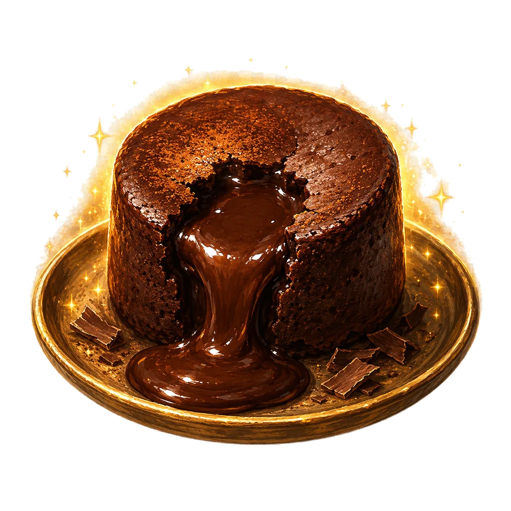 濃厚ショコラ |
カカオ塊 ×4、濃厚バター ×3 | タップに乗る毎秒生産の割合が2倍 |
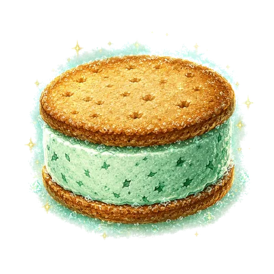 ミントアイスサンド |
氷結ミント ×6、霜砂糖 ×3 | 金クッキーが出やすくなる(式は図鑑) |
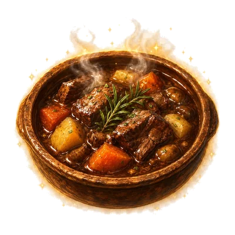 狩人のシチュー |
黒鉄の欠片 ×2、火炎香料 ×4 | モンスターが出やすくなり、与えるダメージも上がる(式は図鑑) |
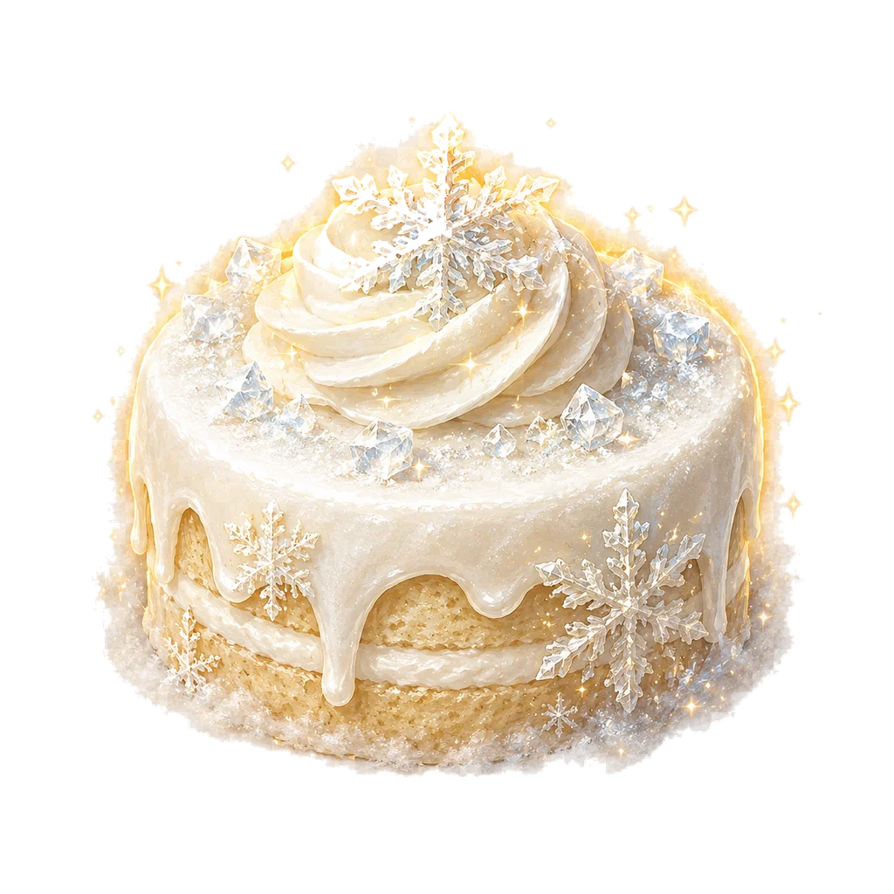 霜降りケーキ |
霜砂糖 ×5、静寂の氷核 ×1 | ノルマの進行がゆっくりになり、余裕を持って稼げる(式は図鑑) |
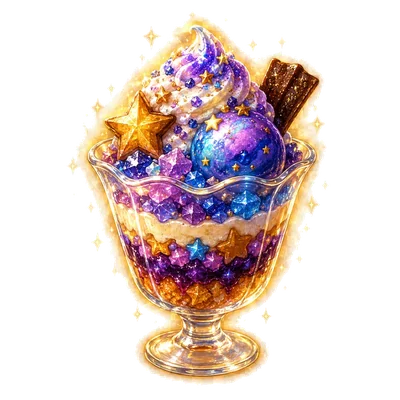 星屑パフェ |
星屑糖 ×8、彗星の欠片 ×1 | 効果中に購入した設備がその周回中ずっと強くなる(式は図鑑) |
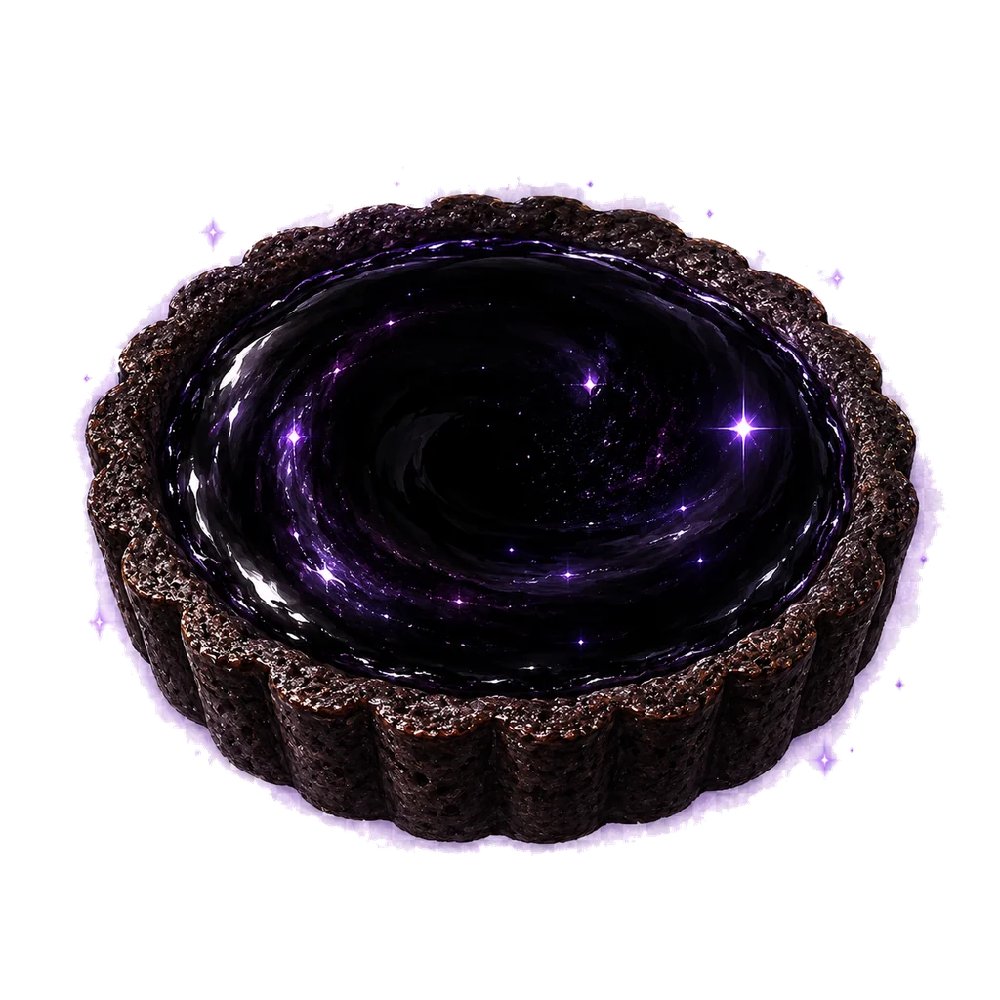 虚空タルト |
虚空糖 ×10、彗星の欠片 ×2 | 素材が多く落ち、モンスターも出やすくなる(式は図鑑) |
何から作るか
- 名匠の天板（小麦粉10・カカオ塊8）。全生産に直接倍率がかかるため、どんな方針でも腐りません。最優先。
- モンスター図鑑（黒鉄の欠片4・静寂の氷核2）。素材ドロップ数とモンスターダメージが同時に上がり、以降の素材集めが加速します。
- 方針に合わせて黄金の泡立て器（タップ型）または断熱オーブン手袋（焼成型・討伐兼用）。
- ボス核が余ってきたら次元コンパス。ボス化に必要な討伐数が減るので、ボス核の回収そのものが速くなります。
- 料理を活用しはじめたら蒸留フラスコで効果時間を延長。